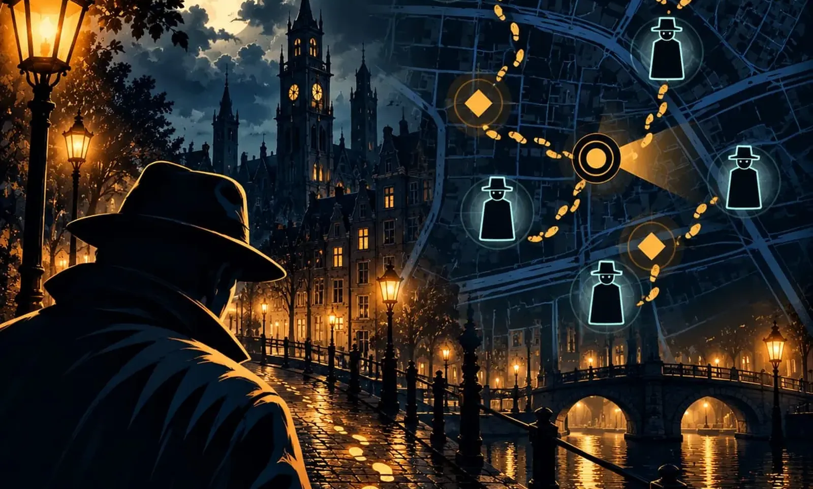
Mystery Wandelingen
Een detectivespel dat je loopt, in je eigen straten. De buurt om je heen wordt de plaats delict.
- Overalgps legt de route om je heen
- Gratisproefronde bij elke zaak
- € 9,95één ticket per team
Kies je zaak, trek je jas aan.
Elke zaak speel je in je eigen buurt, in het Nederlands of het Engels. Elke wandeling begint met een gratis proefronde.
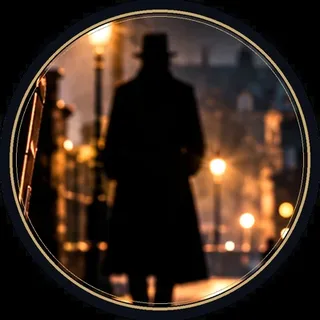
Moordwandeling
Acht sporen, vijf getuigen, één leugenaar.
Bekijk de zaak →De Verdwijning
Iemand is weg. Ontvoerd, gevlucht, of iets anders?
Bekijk de zaak →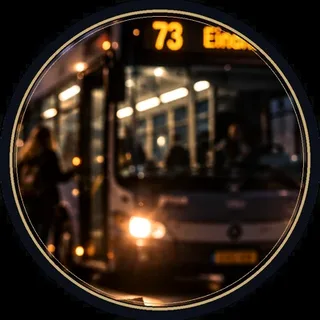
De Laatste Bus
Telefoon zegt: aangekomen. Thuis zegt: nee.
Bekijk de zaak →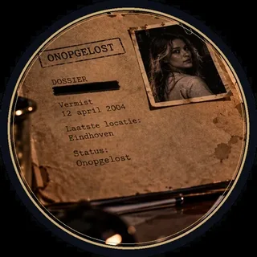
Onopgelost
Een vermissing van twintig jaar geleden, nooit opgelost.
Bekijk de zaak →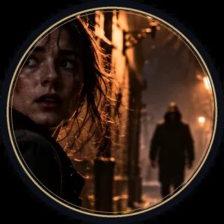
Ooggetuige
Jij zag iets wat je niet had mogen zien. En iemand loopt achter je.
Bekijk de zaak →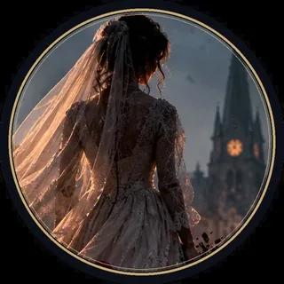
Tot de Dood Ons Scheidt
Ze zou vandaag trouwen. De bruid kwam nooit aan.
Bekijk de zaak →Halloween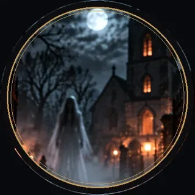
De Nacht van de Geesten
Geen moordenaar, wel een geest. Durf jij na het donker?
Bekijk de zaak →Drie stappen, één dader
- I
Kies een zaak
Start waar je staat. De kaart legt acht sporen op echte plekken op loopafstand: de kerk, de bushalte, het café.
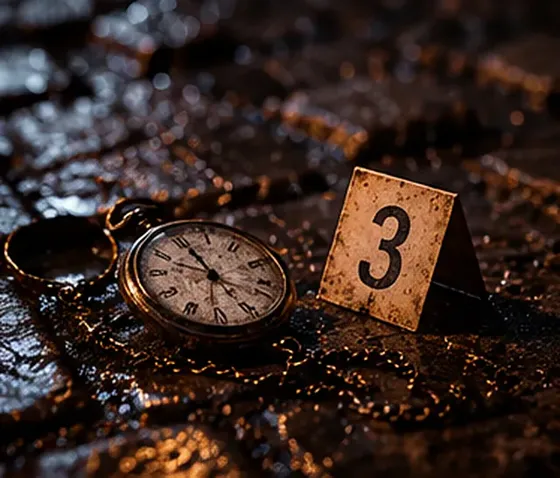
IILoop en verzamel
Binnen 35 meter gaat een spoor open: een schim die iets zag, een bewijsstuk, een camerabeeld, een bericht.
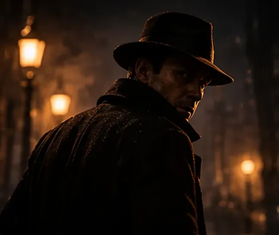
IIIWijs de dader aan
Sluit samen verdachten uit in het notitieboek, ontmasker de leugenaar en wijs de dader aan.
Wat je onderweg tegenkomt
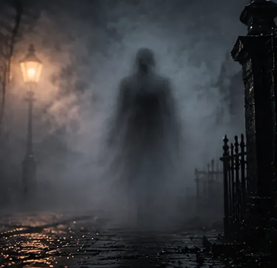
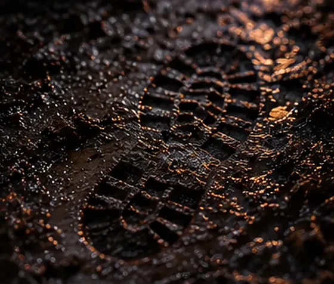
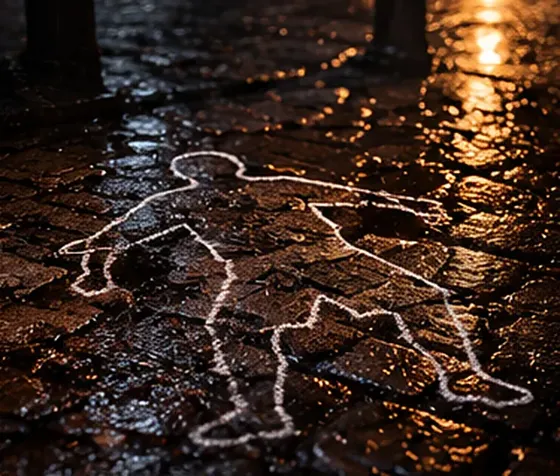
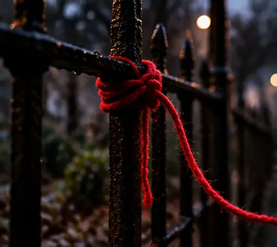
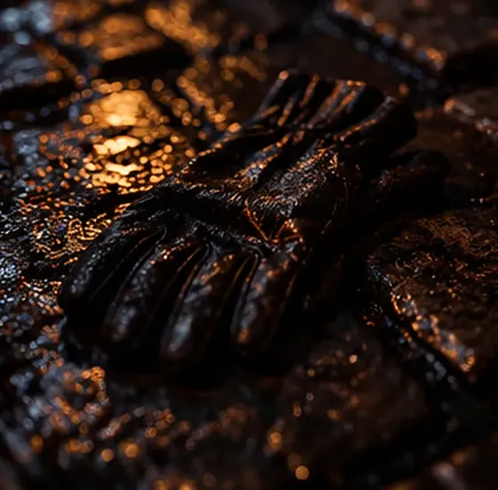
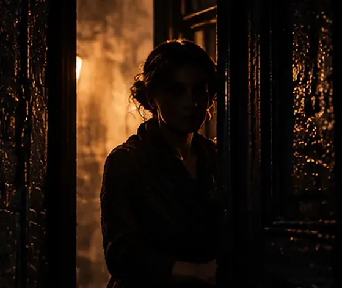
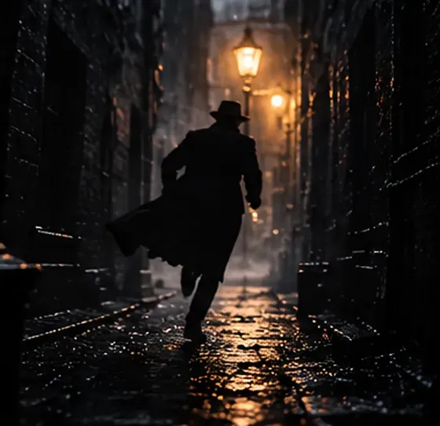
Samen op pad
- Eén ticket per team, iedereen vult dezelfde code in
- Samen op één telefoon of ieder op een eigen
- De code blijft twee maanden geldig
Een wandeling op maat
- Voor een uitje, vrijgezellenfeest, verjaardag of klas
- Jullie stad, jullie namen, jullie verhaal
- Van een stel tot honderd man, in teams tegen elkaar
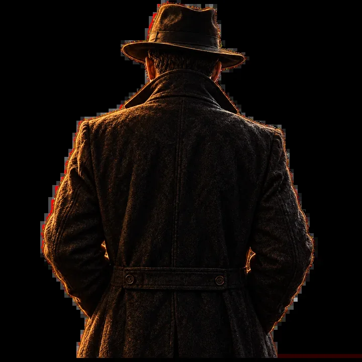
Klaar om te gaan?
De eerste ronde is gratis. Je hebt alleen je telefoon en je schoenen nodig.